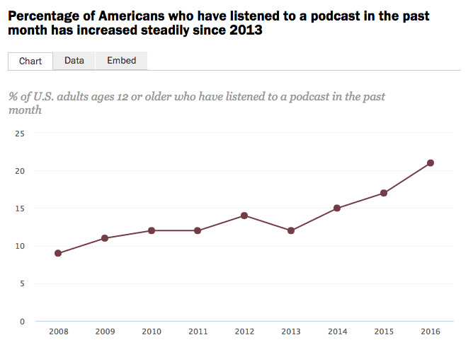

A revolução (nada silenciosa) do podcast
Entenda de que forma o podcast tem crescido cada vez mais no Brasil e o formato tem se tornado um veículo importante para divulgação de produtos e serviços.
A revolução do podcast no Brasil
Este mês o Spotify fez uma campanha Out of Home (OOH) voltada para divulgação de podcast na plataforma, com peças espalhadas em vários pontos de São Paulo com alguns dos principais criadores para esse tipo de mídia. O formato tem ganhado popularidade no Brasil e no mundo e se tornou uma opção de marketing de conteúdo. E seu crescimento não tem passado despercebido por empresas de vários segmentos. O mais interessante é que mesmo empresas do mercado financeiro, que costumam investir em conteúdo mais sóbrio e canais mais tradicionais, tem investido no formato.
O podcast se destaca pela facilidade de consumo, a diversidade de assuntos, a periodicidade de publicação e o profissionalismo alcançado por alguns dos principais criadores desse tipo de conteúdo. Com aplicativos como o Podcast Addict ou o próprio Spotify é possível ouvir o seu podcaster favorito no trânsito ou no trabalho. Ao contrário do vídeo, que é uma mídia que demanda mais atenção, o formato é de fácil consumo, como acontecia com os antigos programas de rádio.
Já em 2016, o News Media, um dos principais estudos do setor de mídia nos EUA, identificava o crescimento do formato. Entre os dados que chamavam atenção na época, um em cada cinco americanos com mais de 12 anos de idade afirmava ter ouvido algum tipo de podcast no último mês. Apesar de focar no mercado norte-americano, o estudo mostrava uma tendência mundial, que agora parece ganhar força também no Brasil.

Mas como as empresas tem usado o formato?
De produtos financeiros a cursos de inglês, tecnologia e empreendedorismo
O Nerdcast é um dos melhores exemplos de como entregar valor para seu público, associando o conteúdo com marcas dos mais diferentes segmentos. No seu mídia kit o site Jovem Nerd apresenta números impressionantes: publicações semanais alcançando a média de 1 milhão de downloads/episódio. O objetivo é comercializar formatos como o episódio temático, em que o assunto/tema é contextualizado e definido junto com o anunciante. Um deles, por exemplo, foi patrocinado pela Fini, fabricante de doces. Mas eles foram além.
Atualmente o Nerdcast não publica 1, mas sim 2 episódios semanais. O segundo é sempre associado a alguma empresa:
- Speak English: Nerdcast patrocinado pela Wise Up, com conteúdo relacionado com ensino de inglês, termos, pronúncia, etc.
- NerdTech: resultado de uma parceria com a Alura, plataforma de cursos online, onde se discutem assuntos de tecnologia.
- Nerdcast Empreendedor: focado em empreendedorismo, o conteúdo tem sinergia com o MeuSucesso.com, escola de negócios.
- Nerdcash: este foi o último dos 4 a ser criado, mas é o mais interessante deles. O podcast é mantido pela corretora Nova Futura, que tem se destacado também por formatar produtos específicos para o público do Jovem Nerd, como um COE que acompanha a variação das ações da EA (fabricante de jogos), Harley Davidson e GAP.
O Nerdcast é um exemplo entre tantos outros. Algumas empresas, como a Lambda3 (consultoria de tecnologia) e mesmo a Alura, tem mantido seus próprios podcasts. O fato é que a mídia tem chamado a atenção não só do público, mas de empresas e anunciantes, de olho numa nova geração, que não se interessa tanto por TV e rádio. E a tendência é crescer ainda mais.